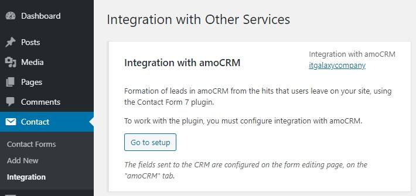
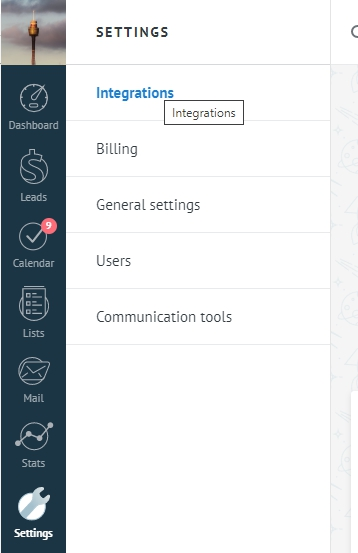
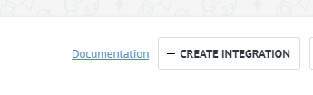
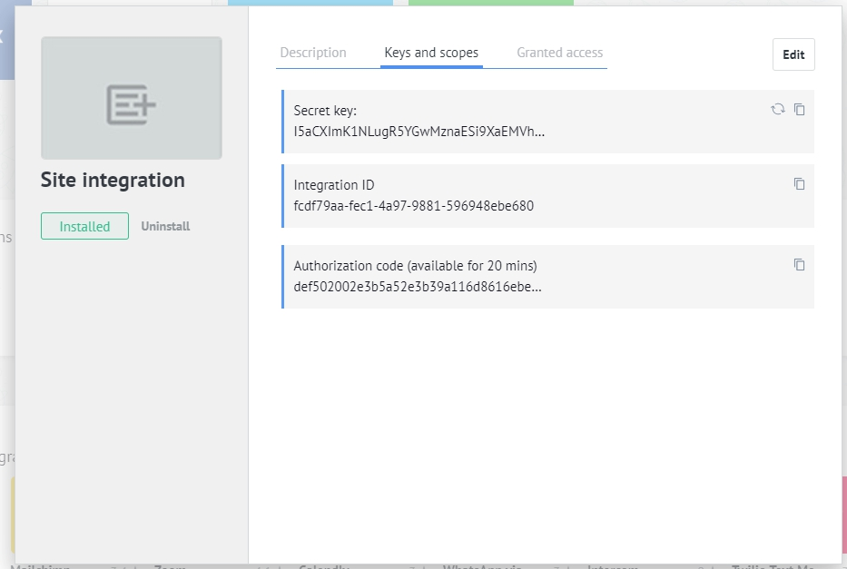
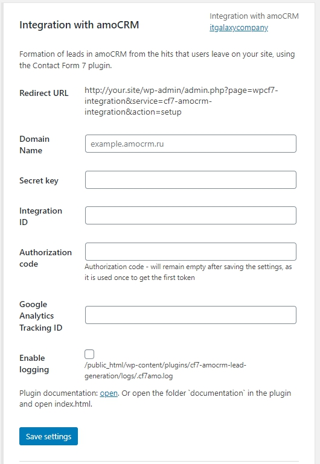
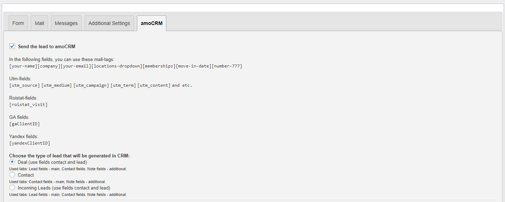
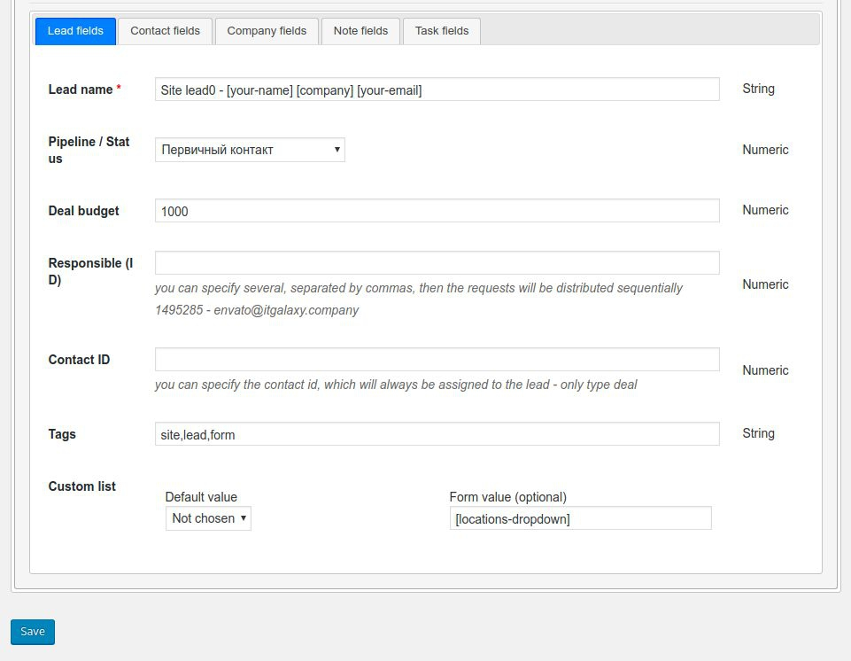

Created: 02/07/2020
By: itgalaxycompany
Site: itgalaxycompany
Thank you for purchasing my plugin. If you have any questions that are beyond the scope of this help file, please feel free to comments in plugin page here. Thanks so much!
The main task of this plugin is send your Contact Form 7 forms directly to your amoCRM account.
Generate leads from Contact Form 7 forms.
You can set up each form personally, specify which information your want to get.
Go to the Contact Form 7 -> Integration.
Find "Integration with amoCRM" and click the button "Go to setup".
Next. Go to your account amoCRM - Settings -> Integrations your_amoCRM_domain/settings/widgets/
Click "Create Integration"

Redirect URL - http://your.site/wp-admin/admin.php?page=wpcf7-integration&service=cf7-amocrm-integration&action=setup
Allow access: All
Integration name - example: Site integration
Description - example: This is integration with site
Click "Save" and open tab "Keys and scopes".
Now fill in the settings on the site
Enter the domain name of your account amoCRM (without http:// or https://).
Secret key, Integration ID and Authorization code - copy from the data from the tab.
(ONLY FOR DEALS) If your use Google Analytics for monitoring your statistics, your can get more data. Enter the Google Analytics Tracking ID.
Save settings.

Add send data in AmoCRM. (your_amoCRM_domain/settings/pipeline/leads/). The setup of data transfer in Google Analytics can only be setup for one status of each pipeline.
Go to the Contact Form 7. Open the form which your want to send to amoCRM.
Open tab amoCRM.
Set checkbox "Send the lead to amoCRM".
Choose the type of a lead that will be generated in CRM (Deal, Contact, Incoming lead).
Fill fields for the selected type. And click "Save" button.
When sending the form, the data will be transferred to amoCRM.
Below is an example of the filled-in fields for a deal type.
Another type is filled in by analogy.
itgalaxycompany